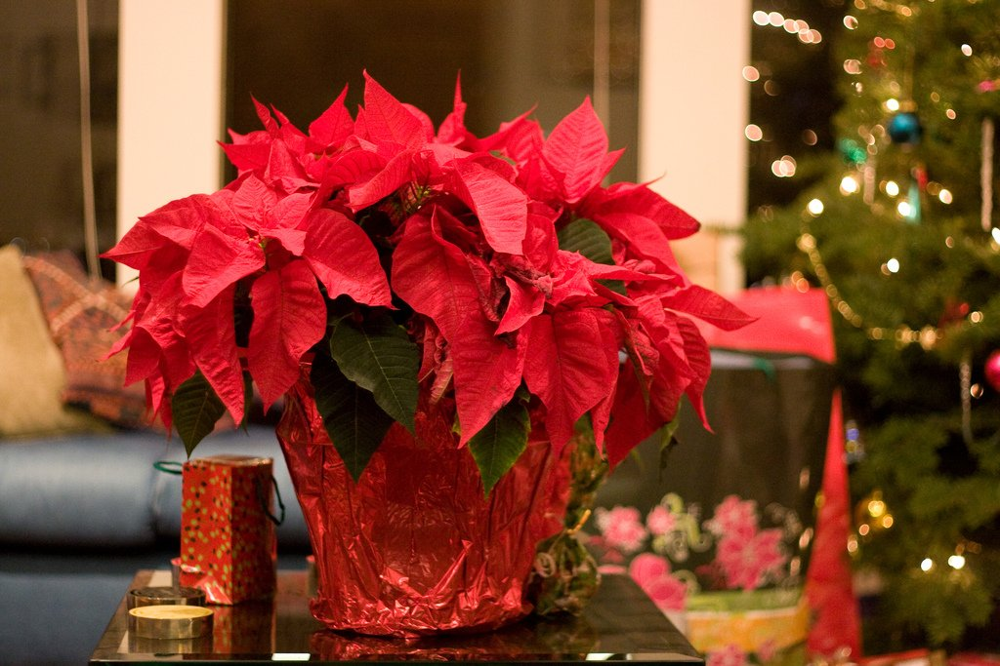
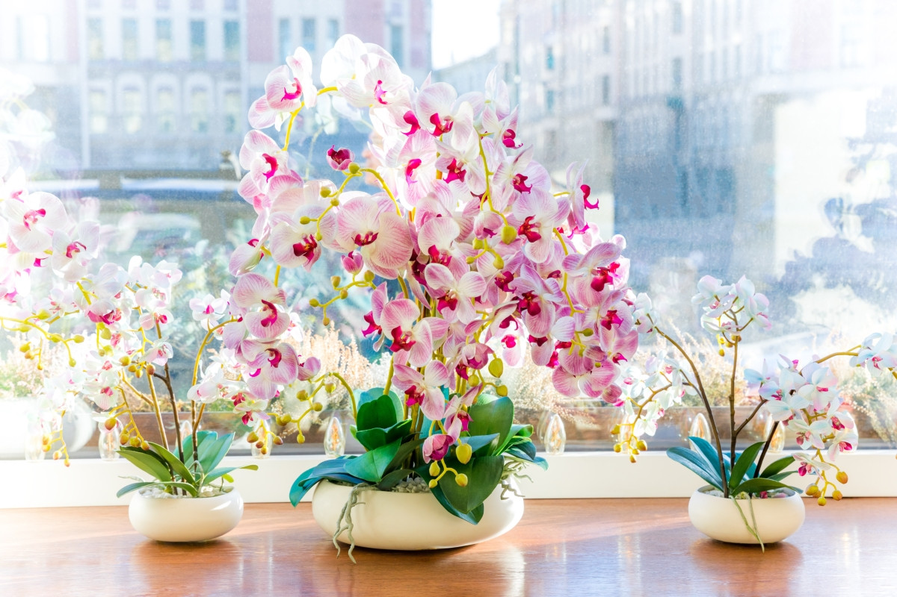
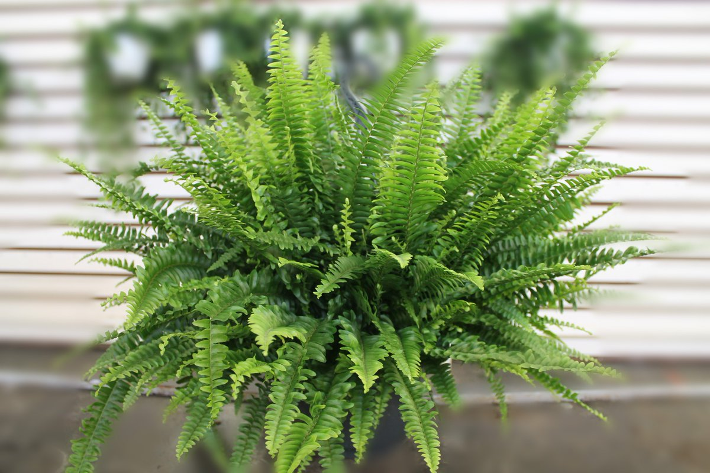

Тенелюбивые
Пуансеттия
У нас это неприхотливое растение считается рождественским цветком, продается в основном под Новый год. Но правильный уход, своевременная пересадка могут сделать свое дело, сохранив прекрасный молочай на долгие годы. Отлично растет в глубине северной комнаты. Чтобы пуансеттия зацвела к Рождеству, ей даже искусственно сокращают солнечный день до 10-12 часов, начиная с ноября. Рождественскую звезду рекомендуется выращивать на подоконниках восточной или западной ориентации. Кроме того, следует помнить, что растение очень негативно относится к сквознякам и целенаправленным лучам солнца. В период формирования бутонов температура в помещении с пуансеттией должна находиться на уровне 18-25 градусов, во время цветения ― 15-16 градусов, а во время зимовки ― 12-14 градусов. Летом горшок с цветком можно выносить на балкон или же просто почаще проветривать комнату. Однако сквозняки должны быть исключены, иначе молочай красивейший начнет сбрасывать листья. Если в вашем доме или квартире круглый год довольно тепло, проветривания должны быть систематическими вне зависимости от сезона. В первой половине осени растению необходим световой день длиной всего 12 часов. Чтобы организовать для цветка подобные условия, его аккуратно прикрывают темной тканью или картонной коробкой на 14 часов каждый день на протяжении двух месяцев. Так бутонизация пойдет быстрее и прицветники начнут наливаться ярким цветом еще активнее. Грамотно подобранный горшок — это очень важный фактор при выращивании любого комнатного растения, и пуансеттия — не исключение. Для начала следует определиться с материалом, так, для культуры предпочтительна керамика или пластмасса. Что касается габаритов емкости, то они должны быть такими, чтобы корневище вместе с земляным комом свободно помещались, но и не находились в «свободе», иначе у куста начнет развиваться не зеленая масса, а корень Пуансеттии любят воздушный и плодородный грунт. Самым оптимальным субстратом для культуры считается смесь низинного торфа, дерновой, листовой почвы и речного песка в равных частях. Уровень кислотности — нейтральный либо слабокислый. Рождественская звезда требует щедрого полива. Но перед тем, как приступить к поливу, нужно непременно проверить состояние грунта в горшке: его верхний слой должен просохнуть, но не растрескаться на части. Используйте для увлажнения воду комнатной температуры, а лучше немного подогретую. Если куст почувствует холодную влагу, его листва может начать опадать. Также не забывайте вовремя сливать остатки воды из поддона. Любой застой воды у корневища может привести к загниванию корней

Фаленопсис
Фаленопсис можно считать лучшим другом начинающего цветовода. По сравнению с другими своими сородичами он неприхотлив и спокойно развивается в условиях обычной квартиры. 50% успеха в выращивании фаленопсиса – правильно выбранное место. Идеальными являются восточные и западные подоконники. На южном будет в самый раз только зимой, так как летом нужно будет защищать листья орхидеи от палящих прямых лучей солнца. Нормой для фаленопсиса является 12–16 часовой световой день. 2 раза в месяц растение нужно разворачивать к свету на 180º. Это поможет сформировать относительно ровный стебель растения. Однако во время цветения его лучше не трогать. Любимая цветком температура совпадает с обычной комнатной – +18 –+25℃. Однако есть нюанс – чтобы растение могло образовывать цветоносы, обязательно должен быть перепад суточных температур на 5-7℃. Если считаете, что фаленопсис пора поливать, подождите еще один день. Полив орхидей делают по правилу: лучше недолить, чем перелить. Чрезмерная влажность губит их гораздо больше, чем недолгая «засуха». Летом цветку достаточно 2-х раз в неделю. Традиционный способ полива фаленопсиса – погружение горшка с цветком в воду на полчаса-час. Затем, после стекания воды, растение возвращают на свое место. Для фаленопсиса предусмотрены прозрачные пластиковые емкости с отверстиями на дне и на стенках для лучшей вентиляции и дренажа. Почва фаленопсису не нужна, он относится к подсемейству орхидей, живущих на дереве. Либо купите специальную смесь, в которой содержится древесная стружка и кора, либо сделайте ее сами – 10 частей сосновой коры на 1 часть угля. Можно добавить чуть корней папоротника и торфа. Для дренажа лучше использовать керамзит. Воздушные корни Фаленопсис, находящиеся сверху субстрата, не надо запихивать в горшок. Если часть корня отмирает, сухую покоричневевшую часть необходимо отрезать до здоровой, зеленой. Отмирание старых корней – естественный процесс. По мере роста растение выпускает новые корни. При потере корней, листья обычно теряют тургор, становятся дряблыми, повисают вниз. Листья необходимо протирать и содержать в чистоте, так как у моноподиальных растений это самая важная часть. В домашней культуре Фаленопсис часто сохраняет большое количество листьев и может достигнуть 50-70см в длину, свешиваясь вниз. Корни появляются у растения между листьев. Когда прежние нижние листья отмирают и ствол оголяется, то необходимо отрезать эту часть до здоровых новых нижних листьев и корней. Растение спокойно переносит эту операцию и продолжает дальнейший рост.

Папоротник
Так как папоротниковидные растения негативно реагируют на загрязнённый воздух, не стоит размещать его на кухне. Воздух там сильно загазованный. Также губителен для папоротника дым. Нельзя ставить горшок с растением там, где курят. Излишняя сухость воздуха вредит цветку. Поэтому лучше размещать папоротник подальше от кухни и задымлённых помещений. Если всё же очень хочется поставить папоротник на кухне, или другого места попросту нет, можно установить на кухне вытяжку и увлажнитель для воздуха. Так как папоротник вырастает достаточно крупным, не стоит размещать его на подоконнике. Будет лучше поставить его на пол, или на отдельную тумбочку. Если цветку будет тесно, листья будут деформироваться, упираясь в стены. Это сильно повлияет на эстетический вид растения. При размещении необходимо учитывать освещение. Папоротник не переносит полуденного солнца. Лучше всего поставить горшок с цветком в полутень. Важно, чтобы комната, в которой будет находиться древнее растение, проветривалась. Застойный воздух плохо сказывается на росте папоротника. Так как папоротниковидные произрастают в лесах и близ болот, необходимо подобрать похожую по составу почву. Лучше, чтобы грунт был рыхлым слабощелочным. К почве нужно добавить перегной, хвою и торф. Можно дополнить почвосмесь песком. Также важно не забывать о дренажном слое. Для папоротниковидных подойдёт керамзит. Оптимальная температура для папоротника +15-25C. Важно, чтобы зимой температура не опускалась ниже +18C для теплолюбивых сортов, и не была меньше +12C для сортов, устойчивых к морозу. Необходимо следить, чтобы цветок не находился на сквозняках. Холодный воздух может спровоцировать различные заболевания. Организовывать полив нужно не чаще 1 раза в 7 дней. Нужно использовать фильтрованную или отстоянную воду. Если верхний слой почвы влажный, цветок в поливе не нуждается. Папоротник нуждается в подкормке в период с апреля по октябрь. Зимой, когда наступает состояние покоя, удобрять растение не нужно. Для подкормки используют минеральные и органические удобрения. Нельзя удобрять недавно пересаженный папоротник. Запрещено удобрение больного растения. Это может привести к его гибели. Самой лучшей профилактической мерой будет соблюдение оптимальных условий. Также перед посадкой желательно продезинфицировать горшок и грунт специальными средствами. Лучше не ставить только что купленный папоротник рядом с другими растениями. Необходимо разместить его отдельно на 14 дней. Это поможет растению адаптироваться к новым условиям. Помимо этого, папоротник нуждается в периодическом увлажнении. Необходимо опрыскивать крону не холодной отстоянной водой. Вносить удобрения нужно только в слабой концентрации. Слишком концентрированные растворы могут обжечь корни и нарушить почвенный баланс. Необходимо разводить удобрения слабее, чем указано в инструкциях к препаратам.